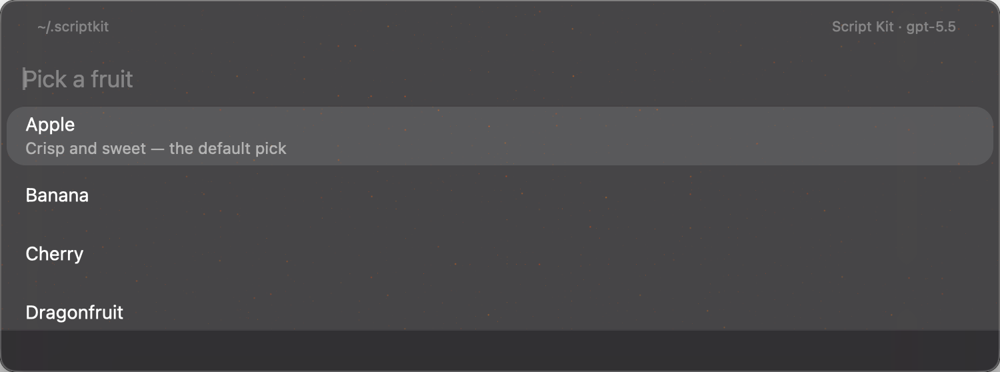

D toggles difference blend, Space blinks the reference. Material, starfield phase, native footer interiors, caret geometry, and glyph rasterization are known-divergence (non-blocking) — see known-divergence.json. Header band (y 0–38), divider, row slots (44px each), selected-surface bounds/radius, and the 32px footer band boundary must register within ±1pt. NOTE: until the exporter emits --sk-arg-window-height (319px), the mockup window falls back to 480px — compare against the top 319px only.